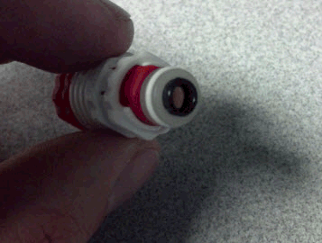

Replacing Red-and-White Fittings and Adding Face Seal
This procedure describes how to replace the red-and-white fittings that are located on the wash buffer reservoir and that connect to the reagent pipettor pressure sensors.
Perform this procedure when servicing is needed. Common reasons for service include:
Fluid leaking or forming a bead on reagent pipettor, sample pipettor, or dispense probe.
Level sense errors on reagent or sample pipettors.
Pressure monitoring errors on reagent or sample pipettors.
Prepare the instrument.
Open the main upper left cover.
Insert a cover interlock switch bypass.
Remove the red-and-white fittings for the reagent or sample pipettor probes.
Repeat these steps to remove the red-and-white fitting for each pipettor being serviced.
Power on the vacuum pumps. From the
Main Menu, select
Diagnostics > Device Diagnostics
> Digital Devices
> Peristaltic and Vacuum Pumps.
Enable the vacuum pump for the reagent or sample pipettor being serviced.
Verify the pipettor is directly over the wash tower.
Disconnect the red-and-white fitting from the pressure sensor by pulling the white collar back and twisting the red fitting counterclockwise 1/4 turn while pulling outward.
Allow the buffer to drain into the wash tower.
After draining the tubing, disable the vacuum pump and exit the
Digital Devices screen.
If replacing the red-and-white fitting, trim the tubing as close as possible to where the fitting connects, and then discard the fitting.
Remove the red-and-white fittings for the A1 wash probe or dispense probes.
Repeat these steps to remove the red-and-white fitting for each pipettor being serviced.
Unscrew and remove all the dispense and aspirate probes from the dispense probe plate. To avoid getting buffer in the analytical module, place the probes in a container or on top of absorbent material.
Disconnect the red-and-white fitting from the pressure sensor or wash buffer reservoir by pulling the white collar back and twisting the red fitting counterclockwise 1/4 turn while pulling outward.
If replacing the red-and-white fitting, trim the tubing as close as possible to where the fitting connects, and then discard the fitting.
Install the aspirate and dispense probes that were removed.
Insert a face seal.
Figure 219: Installing face seal

Press one face seal into the opening of the red-and-white fitting.
Press firmly on the face seal to verify it is inserted fully into the opening of the red-and-white fitting.
Install the red-and-white fitting.
If installing a new red-and-white fitting, connect it to the trimmed tubing.
Confirm that a face seal is installed in the red-and-white fitting.
Orient the red-and-white fitting so that the red flanges line up with the shape of the mounting hole on the pressure sensors or wash buffer reservoir.
Insert the fitting into the mounting hole on the pressure sensor or wash buffer reservoir. Apply firm pressure to the fitting and rotate it 1/4 turn clockwise.
Note: If unable to rotate the fitting 1/4 turn, verify that the flange is lined up with the shape of the mounting hole.
If the white collar does not snap in after rotating the fitting 1/4 turn clockwise, press the white collar until it snaps in after rotating the fitting 1/4 turn.
Verify the tubing installation.
Prime the reagent probes, sample probe, and A1 wash/dispense probes that were serviced. Prime ten times and monitor for leaks.
Calibrate pressure monitoring for all pipettors that were serviced. Select
Diagnostics
> Device Diagnostics > Analog Devices > Sensor Calibration > Pressure.
Perform 50 reps of the Wet/Dry test on each pipettor that was serviced. Verify that there are no failures reported and that wet test CVs are 1% or less.
Remove interlock bypasses and close the instrument covers.
Initialize the system (if in
Not Ready).
Perform system checks and confirm that all specifications are met.
Perform QC and confirm that customer specifications are met.